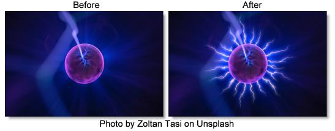

S_ZapFrom
Description
Generates multiple lightning bolts outwards from the edges of objects.
The S_ZapFrom filter comes from the Emmy award winning Boris FX Sapphire filter set.
Category
Render.
Controls
Presets
To select a preset, pick one from the Presets window.
Time
The effect is advanced in time.
Surface Bolts
The number of points along the edges to generate lightning bolts from.
Threshold
The value used to determine the edge locations. Objects darker than this value are ignored. On smooth objects, larger threshold values move the edges inwards to make smaller bolts, while smaller values move the edges outwards. You can use the Show Edges option to view the edge image directly while adjusting this parameter.
Blur FromObj
Blurs the image before finding the edges. This can help remove noise and reduce the number of separate bolts. You can use the Show Edges option to view the edge image directly while adjusting this parameter.
FromObj Use
Determines which channels are used.
Luma
The luminance of the RGB channels is used.
Alpha
The Alpha channel is used.
Show
Selects the output option.
Result
Shows the normal lightning result over the image.
Edges
Shows the edge image. This can be useful to view while adjusting the Threshold and Blur From.
Max Length
Scales the length of the bolts.
Vary Length
The amount to randomly vary the length of each bolt. A value of 0 makes all bolt lengths equal to Max Length, and a value of 1 makes bolt lengths between zero and Max Length.
Vary Spacing
The amount to randomly vary the starting point of each bolt along the edges. A value of 0 makes the bolts regularly spaced while a value of 1 make the bolts randomly spaced.
Bolt Width
The width of the lightning bolts.
Vary Width
The amount of random variation in the width of the bolts along their lengths.
End Pointiness
Determines how pointed the end of the bolts are. If 0, the entire bolt will have equal width. If 1, the bolts will thin out along their entire length for a pointed end. If it is .5, the bolts will start thinning out half way between the start and end points.
Rand Seed
Used to initialize the random number generator. The actual seed value is not significant, but different seeds produce different random lightning bolts and the same value should give a repeatable result.
Wrinkle Amp
Scales the amount of wrinkles in the bolts. Decrease for straighter, smoother bolts or increase for more kinky bolts.
Curve Amp
Similar to Wrinkle Amp but affects the general path of the bolt. If decreased, the bolt will stay closer to the line between the Start and End points. If increased, it can wander further away from this line. This differs from the Wrinkle Amp parameter in that it can be used to make straighter bolts while still keeping the wrinkles at the detailed level.
Branchiness
Scales the number of additional bolts that branch from the main bolt. Set this to 0 for basic bolts with no extra branches.
Branch Angle
The maximum angle of the random branches relative to the bolt they are branching off of. If this is 0, the branches will be more lined up with the main bolt. With larger values, the branches will be more perpendicular to the main bolt.
Branch Length
The scaled length of the branches relative to the distance between the Start and End points.
Glow Bright
Scales the brightness of the glow applied to the lightning.
Glow Color
The color of the glow applied to the lightning.
Glow Width
Glow Width
The width of the glow applied to the lightning.
Glow Width Red
The relative red width of the glow.
Glow Width Grn
The relative green width of the glow.
Glow Width Blue
The relative blue width of the glow.
Zap Bright
Scales the brightness of the lightning bolts.
Zap Color
The color of the lightning. If you want to keep the lightning bolt itself bright white, you can still affect the perceived color by adjusting the Glow Color instead.
Start Offset
The offset from the start point to begin drawing the bolts. This can be useful for animating a lightning strike.
Length
The length of the bolts beginning at Start Offset. If less than 1, the bolts will not be drawn all the way from start to end.
Bg Brightness
Scales the brightness of the image before combining with the lightning. If 0, the result will contain only the lightning over black.
Combine
Determines how the lightning and glow are combined with the image.
Screen
Performs a blend function which can help prevent overly bright results.
Add
Adds the lightning to the image. This gives brighter glows over light backgrounds.
Zap Only
Renders the lightning over black.
Atmosphere
Atmosphere Amp
Atmosphere gives the effect of the lightning shining through a dusty atmosphere and picking up light or getting shadowed. This parameter adjusts the amount, or amplitude of the atmospheric effect. 0 creates smoother lightning while higher values provide a more dirty look.
Atmosphere Freq
Controls the spatial frequency of the atmospheric noise. Turn this up higher to get finer details or turn down for broader overall variation.
Atmosphere Detail
Controls the amount of fine detail in the atmosphere simulation. Decrease to get smoother atmosphere or increase for a more crunchy, grainy look
Atmosphere Seed
Used to initialize the random number generator for the atmospheric noise. The actual seed value is not significant, but different seeds produce different results and the same value should give a repeatable result.